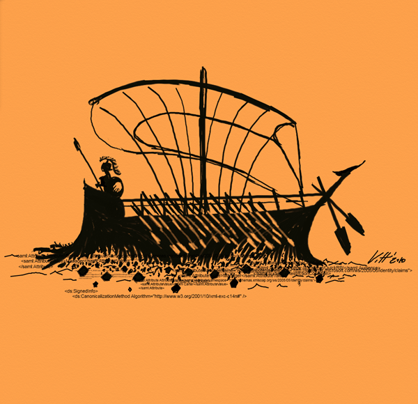
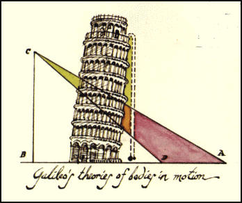
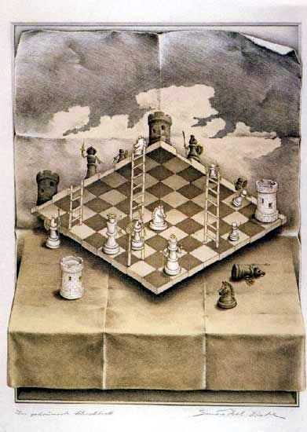

Düşünce Deneyleri ve Felsefe
Düşünce deneylerinin pre-sokratik filozoflardan orta çağdaki biliminsanlarina ve oradan da günümüze uzanan köklü bir geçmişi var. Misal eskilerden Plutarch’in aktardığı Theseus’un gemisi düşünce deneyini ele alalım. Theseus abinin bir gemisi varmış prenses, geminin parçaları eskidikçe abi eski parçaları yeni parçalarla değiştiriyormuş. Zaman içinde o kadar çok tamirat yapmış ki bütün parçalar değiştirilmiş, orjinal gemiye ait hiç bir parça kalmamış. Şimdi, bu gemi Theseus’un gemisi ile aynı gemi mi yoksa farklı bir gemi mi? Farklıysa ne zaman farklı oldu? Aynı gemi tabi canım, parça değiştirmenin lafı mı olur diyorsan söyle bir varyasyon ekleyelim. Theseus her parça değiştirdiğinde eski parçayı kuzeni Pheseus’a versin, o da bu eski parçalardan bir gemi yapmaya başlasın. Zaman içerisinde Theseus’un gemisindeki bütün parçalar değişirken, Pheseus’un da eski parçalardan yapılmış bir gemisi olur. Şimdi, hangi gemi Theseus’un gemisi? (Kafası karışanlar objelerin formu ve sembol obje ilişkileri ile ilgili yazılara göz atabilirler)
Bu ve bunun gibi bir çok düşünce deneyi özellikle 20. yüzyılın ikinci yarısından itibaren felsefe ve bilimde popüler oldular. Schrödinger’in Kedisi, Mary’nin odası, tranvay problemleri, mahkumların açmazı ve daha niceleri. Bu düşünce deneylerinde oturduğumuz yerde kafamızın içinde deney yapıp sonuçlara ulaşıyoruz, ama oturduğumuz yerden yapıyorsak bu deneyi madem, bu sonuçlara nasıl ulaşıyoruz acaba? Hani bilimsel bir deneyde laboratuarda, bir sürü farklı parametrenin kontrol altında olduğu şartlarda, bilimsel metodolojiye uygun bir deney yapıp, sonuçlarını istatistiksel olarak analiz edip bir sonuca varıyoruz. Ama kafamızın içerisinde bir durumu hayal edip bir deney yaptığımızda bir sonuca nasıl ulaşabiliyoruz? Bu yazıda biraz düşünce deneylerinden ve düşünce deneylerini yöneten etmenlerden bahsedeyim dedim prenses.
Hilary Putnam’in ikiz dünya düşünce deneyi yakın geçmişten popüler bir örnek. Dünyanın tıpa tıp aynısı ikiz bir dünya hayal edelim. Bu dünyada gerçek dünyadaki herşeyin bire bir aynısı bir ikiz kopyası var. Yanlız tek fark, bu dünyada su, H2O moleküllerinden değil de XYZ moleküllerinden oluşuyor. Peki, su bu iki dünyada aynı anlama mı geliyor? Şimdi sen prenses, gerçek dünyada su dediğin zaman H2O’yu kastetiyorsun. Seninle bire bir aynı beyne sahip ikiz dünyadaki ikiz prenses ise su dediği zaman XYZ’yi kastediyor. Demek ki “su” kelimesinin anlamı sadece beyinde olan bitene bakılarak anlaşılamaz, o kelimeyi kullanan kişinin kelimeyi öğrenme geçmişine de bakmak lazım. Kelimeyi nerede öğrendiğine ve nerede kullandığına göre anlamlar değişir. Anlamlar beyinde değil yani! Beynin içinde ne olduğuna bakmadan, içinde ne olmadığı bulduk, süper be! Zihinbilimciler boşa uğraşıyor laboratuarda, sen çok yaşa felsefe!
Felsefecilerin zihinbilimcilerle karşı karşıya gelmeleri ve bir düşünce deneyi ile zihinbilimcilere nanik yapmaları rastlantı değil, düşünce deneyleri felsefecilerin bilimin emperyalizmi ile mücadelesinde son kalelerinden biri aslında. 20. ve 21. yüzyılda bilim büyük bir patlama yaşayıp, hayatımızın her alanını işgal eder hale geldi. Artık doğruluğun standardı bilimsel doğruluk, bilimsel olarak doğruluğu gösterilemeyen her şey ise şaibeli. Felsefeciler de biliminsanları gibi doğruluğundan emin olabileceğimiz gerçekliklere varmaya çalışıyorlar, ama farklı bir metodolojiyle. Biliminsanları deneysel yollarla doğrulara ulaşmaya çalşıyorlar malum. Felsefeciler eskiden a priori, doğruluğu herhangi bir deneyimden bağımsız olarak bilinebilen gerçekliklerin peşinde koşarlardı, a posteriori doğruları, yani deneyimle bilinebilecek gerçeklileri bilime bırakarak. Euclid geometrisi a priori doğruların gücünün simgesiydi, bütün dünyadaki objelerin uyduğu geometrik kurallar hiç bir deneyime gerek olmadan Euclid’in postulatlarının doğruluğu a priori olarak kavranıp anlaşılabilirdi. Lakin, Euclidyen olmayan geometrilerin geliştirilmesi, Euclid’in postulatlarının hiç de öyle a priori doğrular olmadığı, gayette varsayımsal oldukları, başka varsayımlarla çok daha kapsamlı bütün evrene uyan geometriler geliştirebileceği anlaşılınca felsefecileri aldı bir telaş.
Neyse ki çok sürmedi telaşları, Kant çoktan onlara sığınabilecekleri başka bir liman sağlamıştı: analitik doğrular, yani sadece anlamı itibarı ile doğruluğu anlaşılabilen önermeler. Misal, bütün bekarlar evli değildir. Bekar kelimesinin anlamını biliyorsan, “bütün bekarlar evli değildir” in doğruluğundan şüphen olmaz. Felsefeciler anlam analizine verdiler bünyeyi, kavramlar arasındaki ilişkilere bakarak daha derin mevzularda bu tip doğruları bulmanın peşine düştüler. Sentetik doğruları, doğruluğu sadece anlamından anlaşılamayan dünyada olan bitenlere dönüp bakmamız gereken “bütün bekarlar mutsuzdur” gibi tümceleri, bilime bıraktılar. Lakin 20. yüzyılın ilk yarısında, Frege, Russell, ve özelliklikle de Wittgenstein’in başını çektiği dil ve anlam üzerine yapılan çalışmalarla, bir kelimenin anlamının o kadar dünyadan kopuk olmadığı, tam tersine insanlar arasındaki uzlaşmalara dayandığı ayuka çıktı. Meğer analitik doğrular, hiçte öyle senden benden ötede bir doğruluğa işaret etmiyormuş, tam tersine senin benim birlikte dünya ile olan etkileşimimiz üzerine uzlaşarak yarattığımız küçük bir kavramsal dünyada geçerli olan şeylerden bahsediyormuş. Anlam analizi hızla terk edile fetvası yayıldı camiada, felsefecilerin çok daha ulvi şeylerle ile uğraşması lazım.
Quine’in başını çektiği bir grup felsefeci doğallaştırılmış felsefe (naturalized philosophy) diye anılan bir akımın başını çektiler, felsefenin bilimle çok daha iç içe olması gerektiğini, anlamların, analitik ve a priori doğruların peşinde koşmanın anlamsız olduğu, bir yere varmayacağını savunarak. Tabi, bilimle iç içe dediysek, hayde bakam kalkın koltuklardan laboratuara girip birlikte kardeş kardeş deney yapıyoruz demediler, hatta bilimle içe içe olmaktan ne kastettikleri hala pek net değil. Ama analitik doğruların peşinde koşmadan bilimle paralel gittiği düşünülen yollardan biri olarak düşünce deneyleri ortaya çıktı ve bilimsel deneylerin alternatifi olarak ciddi sükse yaptı. 20.yüzyılın ikinci yarısındaki en önemli felsefi tartışmaların merkezinde düşünce deneylerinin olması bu sebeplen.
Tabi, düşünce deneyleri ile aslında analitik doğruların arka kapıdan felsefeye tekrar dahil oldukları yeni yeni anlaşılmaya başlandı. Yüzeyden bakıldığında bilimsel deney gibi bir havaları olsa da, aslında felsefecilerin kullandığı deneyler oldukça kavramsal, oldukça kelimelerin anlamlarına ve kullanımlarına dayanıyor. Aralarındaki farkı görmek için önce bilimsel bir düşünce deneyi ile başlayalım, herhalde bunların içinde en ünlüsü Galileo’nun Aristo’nun ağır maddeler hafif maddelerden daha hızlı düşer teorisinin aksini ispatladığı düşünce deneyi gelir. Deney şöyle prenses. Hayal edelim ki ağır bir obje hafif bir objeye bağlansın. Aristo’nun teorisi bu bir birine bağlanmış objelerin ortak düşme hızını ne tahmin eder? Bir yanda, hafif obje ağır objenin hızını keserken, ağır obje de hafif objenin düşme hızını artıracak, yani ikisinin ayrı ayrı düşme hızlarının arasında bir hızla düşmeleri lazım. Öte yanda, iki objenin toplam ağırlığı her birinin tek başına ağırlığından daha büyük olduğu için, birlikte düşüş hızları ağır objenin düşüş hızından daha fazla olmalı. Yani, Aristo’nun teorisi birlikte düşüş hızlarını, ağır objenin düşüş hızından hem daha fazla hem de daha az olarak tahmin ediyor. Sıçış. Bu çelişkiyi gidermenin tek yolu Aristo’nün ağır objeler hafif objelerden daha hızlı düşerler teorisini çöpe atmak. Elimizi suya sabuna dokundurmadan teoriyi çürüttük, bilim insanı olmak da çok kolay işmiş bea!
Bilimsel düşünce deneyleri düşünce deneyleri içerisinde altın standardı teşkil ettiğinden biraz daha yakından bakmakda fayda var. Bilimsel düşünce deneyleri gerçek fiziksel düşünce deneylerine hem fonksiyon hem de yapı olarak çok benzerler. Misal Galileo daha sonra yukardaki deneyi pisa kulesinden objeleri atıp hassas ölçümler yaparak doğruladı. Hatta Apollo 15 astronotlarından David Scott ayda deneyi kuş tüyü ve çekiç ile tekrarlayıp adam haklı beyler mesajını gönderdi Houstona:
Yani bilimsel düşünce deneyleri empirik yollarla test edilebilir. Ama benzerlikleri bunun da ötesinde. Gerçek deneyler de bilimsel düşünce deneyleri de iki birim arasındaki ilişkileri açığa çıkarmaya çalışır. Gerçek deneyler fiziksel olarak kurulmuş bir düzenekte, ki bu dünyadan alınmış bir detaydır aslen, iki birim arasında bir ilişkinin varolup olmadığına bakar. Bilimsel düşünce deneyleri de aynı şekilde, kavramsal olarak dünyadan alınmış bir detay durum içerisinde iki birim arasında varsayılan ilişkinin tutup tutmadığına bakar ve o kavramsal yapı içerisinde bir çelişki göstermeye çalışır. Misal, Aristo’nun teorisi alenen bizim gündelik hayatta gözlemlediğimiz obje ilişkilerine bakarak geliştirilmiş. Aristo harbiden bir deney yaptı mi bilmiyorum ama bir kuştüyü bir taşdan daha yavaş düşer sonuçta değil mi? Galileo aynı dünyadan, bizim bildiğimiz gündelik dünyamızdan, başka bir detaya dikkatimizi çekiyor. Aristo’nun teorisi kuştüyleri ve taşlar ilişkisini açıkladığı kadar birbirine bağlanan taşları da açıklayabilmesi lazım, sonuçta o da gayet olası bir senaryo. İkinci senaryoyu açıklayamıyorsan, demek ki teorin tutarsız.
Bilimsel düşünce deneylerini severiz sayarız başımızın üzerinde yerleri var, ama bir de özellikle felsefede çok kullanılan Putnam’in ikiz dünyası gibi kavramsal düşünce deneyleri var. Genellikle insanlar bilimsel düşünce deneylerinin gücüne dayanarak kavramsal düşünce deneylerini de aynı ciddiyetle ele almamız gerektiği yanılgısına kapılıyorlar. Kavramsal düşünce deneylerinin bilimsel düşünce deneylerinden ayrıldığı noktalara ve problemlerine gelmeden önce bir tane daha popüler örnek verelim. Herhalde bu tarz düşünce deneyleri içerisinde en bilineni Searle’in Çince Odası deneyidir.
Çince bilmeyen bir abiyi hayal edelim prenses. Bu abiyi bir odaya kapatmışlar. Odanın rafları, içinde Çince karakterlerle gelen sorulara yine Çince karakterle yanıt verebileceği talimatlar olan kitapçıklar ile dolu. Odanın penceresinden abiye Çince bir soru sorduğunda, abi sorudaki karakterlere bakıyor, bu karakterlere uygun kitapçıkları buluyor, bu kitapçıklardan karakterlerin farklı kombinasyonlarına karşılık gelen Çince karakterleri bulup onları bir kağıda yazıp sana geri veriyor. Yani dışardan bakan birisi için abi baya baya Çince biliyor gibi. Soruyu veriyorsun yanıtı geliyor. Ama Searle bu abi şimdi Çince anlıyor mu diye soruyor? Senin sezgilerin ne diyor bilmiyorum prenses ama, beklenen cevap abinin alenen Çince anlamadığı. Abinin tek yaptığı kitaplardaki talimatlara bakıp sembolleri manipule etmekten ibaret. Searle bunun üzerine, bu abi Çince anlamıyorsa, o zaman bir grup sembol ve onları manipule etmeye yarayan talimatlar “anlayış” dediğimiz şey etmiyor diyor.
Mevzunun ehemiyetini anlatmak adına biraz arka plan verelim. Searle’in bu argümanı verdiği devre, bilgisayarların insan zihnine benzer olup olmadıkları, kodlayarak insanın zihninin benzeri yapay zekanın yapılıp yapılamayacağı tartışmalarının yoğun yaşandığı devre. Bilgisayarların yaptığı da sonuçta bir grup sembolleri belli talimatlar çevresinde manipule etmekden ibaret. Yani Searle’in derdi Çince bilmeyen abiden çok, sembol manipülasyonu ile üretilen yapay bir zekanın “anlayış” sahibi olup olamayacağı. Yapay zeka insanın yaptığı bir sürü şeyi yapabilir Çince bilmeyen abinin sorulara cevap verdiği gibi, ama bir insan gibi “anlayamaz”, Çince odasındaki abinin Çinceyi anlamadığı gibi diyor Searle.
Çince odası argümanıyla ilgili problemleri bir yana alıp (ki hiç sevmem bu argümanı), ben asıl kavramsal bir düşünce deneyinin bilimsel düşünce deneylerinden ayrıldığı noktalara işaret etmek istiyorum. Bir düşünce deneyi olarak Çince odası “anlayış” kavramının kullanımıyla ilgili. Düşünce deneyi Çince odası gibi sembol manipülasyon sistemlerinde “anlayış”ın kavranamaz olmasından, bilgisayar modellerinde “anlayış”’ın imkansız olduğu sonucuna varıyor. Burada “kavranamaz” (inconceivable) olandan “imkansız” olana geçişe dikkatini çekeyeyim prenses birazdan bu konuya dönücez. Düşünce deneyinin kendisini empirik olarak test etmenin de bir yolu yok. Tabi ki Searle’in tarif ettiği şekilde bir Çince odası yapabilir, içine koyduğumuz abiye “Abi güzel cevap veriyorsun ama sen Çince biliyor musun şimdi?” diye sorabiliriz, ki eleman da “Nerde abi, ben sade emir kuluyum” diye cevap verir muhtemelen. Ama bu cevap bile düşünce deneyini test etmeye yetmiyor ne yazık ki.
Bize lazım olan her hangi bir sembol manipüle eden sistemde anlayışın gerçekten mantıksız, kavranamaz olduğunu göstermek, yoksa bahsi geçen imkansızlığı elde edemiyoruz. Sembol manipüle eden bir sistemde anlayışın mantıksız olduğu gösterebilmek için “anlayış”ın ne olduğunu bilmemiz lazım. “Anlayış”, “anlamak” dediğimiz ise kavramsal bir mevzu, tamamen kime göre neye göre. Bana sorsan Çince odasını, bütün talimatları içindeki adamla birlikte bir bütün olarak alırsan o bütün Çince anlıyor derim, Çince anlamak doğru düzgün Çince konuşabilmekten öte ne demek olabilir ki? Searle’e göre ise odanın anlayışından bahsetmek saçma, sadece insanlar anlayış sahibi olabilir. (Argümanın da bunu gösteriyor olması lazım aslen, bunu varsayıyor olması değil, neyse girmiyorduk di mi bu mevzuya) Sonuçta, Çince odası düşünce deneyi, “anlamak”dan ne anladığınıza dayanıyor. “Anlamak”dan ne anladığınız, bu etiketi hangi durumlarda ve koşullarda yapıştıracağınız, kavramsal yapınıza ve sezgilerinize dayanıyor, empirik olarak test edilebilir bir şeye değil.
Görünen o ki bilimsel düşünce deneyleri ile kavramsal düşünce deneylerini birbirinden ayıran deneysel olarak test edilebilir olmak. Bir düşünce deneyi ne kadar bilimselse, o kadar empirik olarak test edilebilir oluyor. Öte yandan bir düşünce deneyi ne kadar kavramsalsa empirik olarak test edilebilirlikten o kadar uzak oluyor. Galileo’nunki bir uçta, Searle’in deneyi öbür uçta yani. İki deneyi de zihnimizde gerçekleştiriyoruz, yani ikisi de bir derece kavramsal sonuçta. Ama burada Searle’in deneyini Galileo’nunkinden ayıran asıl temel nokta, deneyin sonucunun kavranabilirliğe (veya kavranamazlığa) dayanması. Kavramsal düşünce deneyleri kavranabilirlik ve olasılık arasında iki yollu çalışıyor genelde. Birinci yol, bir durumu zihninde canlandırabiliyorsan bu mantıksız gelmiyorsa, yani kavrayabiliyorsan, o durum olası demektir. İkinci yol, Searle’in argümanında kullandığı yol, bir durumu zihninde canlandırdığında mantıksız geliyorsa, kavranamıyorsa, o durum imkansız demektir. İlk yol oldukça zararsız, olası olası şeyler illa olacak demek değil sonuçta. Kavramsal dünyamız olası şeyleri tahmin etmede hiç fena değil. İkinci yol ise tehlikeli, imkansız demek olabilecek şeylere ciddi bir sınır çizmek anlamına geliyor. Kavramsal dünyamızın şu anki şekli, hayal gücümüz diyelim, gelecekte olması imkansız şeyleri tahmin etmede o kadar da güçlü değil. Geçmişte bir çok imkansız denilen şey, bugünlere gerçek oldu sonuçta.
Velhasıl prenses, yüzeysel olarak hatta ismen benzer olsalar da bilimsel düşünce deneyleri kavramsal düşünce deneylerinden oldukça farklı şekilde çalışıyor. Kavramsal düşünce deneyleri genelde absürd, dünyada olmayacak durumlar,senaryolar hayal ettikleri için ayrıca tehlikeli. Ama öte yanda, bu şekilde absürd senaryolar da kavramsal dünyamızın sınırlarını test ettikleri için çoğu zaman da aydınlatıcı oluyorlar. Misal, Searle’in deneyi olmasaydı “anlamak” dan ne kastettiğimizi bu kadar net anlayamazdık. Yani, düşünce deneysiz kalmayalım, ama kavramsal düşünce deneylerinin sonuçlarını da aşırı ciddiye almayalım.


{kind=link}
{kind=link}
{kind=link}
{kind=link}
Merhaba,
Searle’nin bu deneyini Say Yayınları’ndan çıkan kitabında okumuştum birkaç yıl önce.
Bir de Maxwell’in Cini düşünce deneyi var. Bu deney termodinamiğin bir kanununun sınanması ile ilgili. Termodinamik şöyle diyor: Farklı sıcaklıklardaki iki sistem, birbiri ile etkileşecek şekilde bırakılırsa, sıcaklığı yüksek olandan, sıcaklığı düşük olana doğru ısı akışı gerçekleşir ve bir süre sonra (bu sürenin ne kadar olduğu önemli değil, yeteri kadar uzun bir süre diyelim) iki sistem bir denge sıcaklığında dengeye gelir. Eğer iki sistem zaten eşit sıcaklıkta ise, ne kadar beklenirse beklensin, sistemlerden birinden diğerine net bir ısı akışının olması ve birinin sıcaklığı artarken diğerinin sıcaklığının azalması beklenmez.
Burada Maxwell şöyle bir deney tasarlıyor: Kapalı bir kutu ortadan bir bölme ile ayrılıyor. Böylece kutu ikiye bölünmüş oluyor. Kutunun bu iki bölmesine önceden sıcaklıkları ölçülmüş ve eşit sıcaklıklarda olduğu bilinen aynı cinste gaz koyuyor. Bu arada sıcaklık dediğimiz şey moleküllerin hareket enerjileridir, yani hızlı olan daha sıcaktır. Bir gazın sıcaklığından bahsettiğimizde, o gazdaki moleküllerin ortalama hareket enerjilerinden bahsederiz. Yani gazın içerisinde bu ortalamanın üstünde ve altında hızlara sahip olan moleküller vardır. İşte Maxwell diyor ki, aradaki bölmede bir kapı olsun ve bu kapıyı kontrol edebilen bir cin bulunsun; öyle ki bu cin kapıya doğru gelmekte olan moleküllerin hızlarını ölçebilir ve istediği molekülün geçeceği şekilde kapıyı açıp kapatabilir. Şimdi bu cin kapıya doğru, ortalamadan yüksek bir hızla gelen bir molekül görünce kapıyı açar, böylece bu molekül diğer tarafa geçer. Böyle devam ederek bütün hızlı molekülleri kabın bir tarafında, yavaşları da diğer tarafında toplar. Böylece termodinamiğin söylediği şeyin yanlış olabileceğini iddia eder.
Maxwell bu deneyi 1867 yılında açıklamıştır, fakat deneyin hatalı olduğu ancak 1929’da anlaşılmıştır. (Hatanın ne olduğunu tahmin edebilir misiniz?)
Sanırım elimizde böyle bir cin olmadığı için bu deney de kavramsal bir düşünce deneyi sayılıyor.
sevgili onur
maxwell’in cini deneyinin dizaynında şöyle bir problem var. cin kapıyı her araladığında ister soğuk ister de sıcak odada bulunsun farketmez, düzensizliği küçük bir oran da olsa artırmaktadır, dolayısıyla yavaş hareket eden soğuk moleküllerin ya da hızlı hareket eden sıcak moleküllerin “mutlak” bir biçimde tek bir odada toplanması imkansız.
Son paragrafı okuyunca; bilimkurguyu neden çok sevdiğimi hatırladım.
Günlük hayatımızda sıradan gelen olayları, kuralları, tepkilerimizi (genel olarak şeyleri) farklı bir ortama koyup, bize göstermeye çalışıyor.
Stanislaw Lem buna güzel bir örnek.